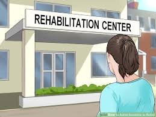

Bangladesh has 7 million drug addicts, ‘over half of them are addicted to yaba’
Bangladesh has at least 7 million drug addicts and 5 million of them are hooked on yaba pills, according to people familiar with the situation.
"Drug abuse treatment plans not only help addicts detoxify in a safe environment but also assist them through all stages of the recovery process".
Inpatient programs offer the highest level of treatment care, with medically supervised detoxification and around-the-clock care and support.
Certain medications can mimic the effects of addictive drugs, which relieves withdrawal symptoms and cravings.
Motivational Enhancement Therapy (MET) works by helping addicted people learn how to change their own thoughts and behaviors.
Outpatient treatment is an ideal option for people who are motivated to stop using their substance of choice, but require the flexibility of a program that will work around their schedules.
The basic premise of the 12-Step model in addiction treatment is that people can help one another achieve and maintain abstinence from drugs or alcohol.
Just as with other medical illnesses, early intervention can make a crucial difference in preventing what could become a lifelong and potentially disabling psychiatric disorder.
A drug rehabilitation program may officially last for only a few months, but rehab is much more than just a 90-day fix. Recovery is a process that evolves through a series of stages, and your growth in sobriety can continue for the rest of your life.
There are two big reasons to get professional help when quitting drugs or alcohol: ensuring safety during detox and setting the groundwork for lasting recovery. Rehab centers are designed to help you through every step of the process. Once they’ve determined your individual needs, they’ll create a customized treatment plan that is right for you. Some of the factors that go into your customized plan include:
Support groups can provide emotional guidance and support for addicted people when cravings strike.So find those people who also want a sober life.Have those people who can be with you!
In a self-help group, the members share a common problem, often a common disease or addiction. Self-help groups can occur in a wide variety of forms, from two individuals sharing experience and coping strategies, to small groups gathering in community meeting rooms, to large, incorporated organizations offering information, support and advocacy services.
There are several prominent support groups for addiction, including Alcoholics Anonymous, Narcotics Anonymous,Cocaine Anonymous etc.Many people have become sober with the help of addiction support groups. However, support groups are only one part of addiction treatment.Members of these groups are of all races and religions and all that is necessary is to admit that there is a problem, that it is out of control and that you want help and/or support. Meetings are free and there are no membership requirements beyond a desire to recover, though for some groups, meetings can be “open” (anyone can attend) or “closed” (attendance is limited to people who want to stop drinking, using drugs, or engaging in the behavior the group is focused on).
Bangladesh has at least 7 million drug addicts and 5 million of them are hooked on yaba pills, according to people familiar with the situation.

In a society that continually promotes alcohol and drug use at every level, the need to provide education on the dangers of alcohol and drug use and its effect on children has never been greater. NCADD believes education on this critical threat needs to
Stay Tuned With Reflection!